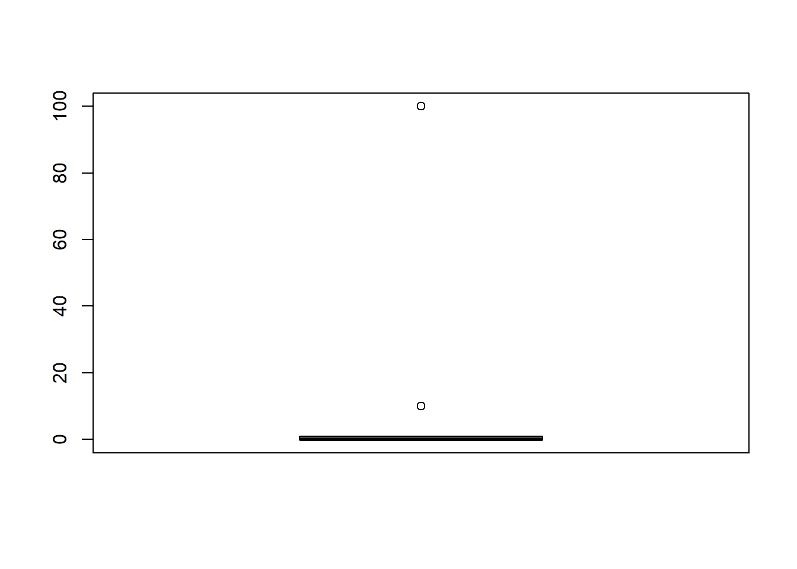
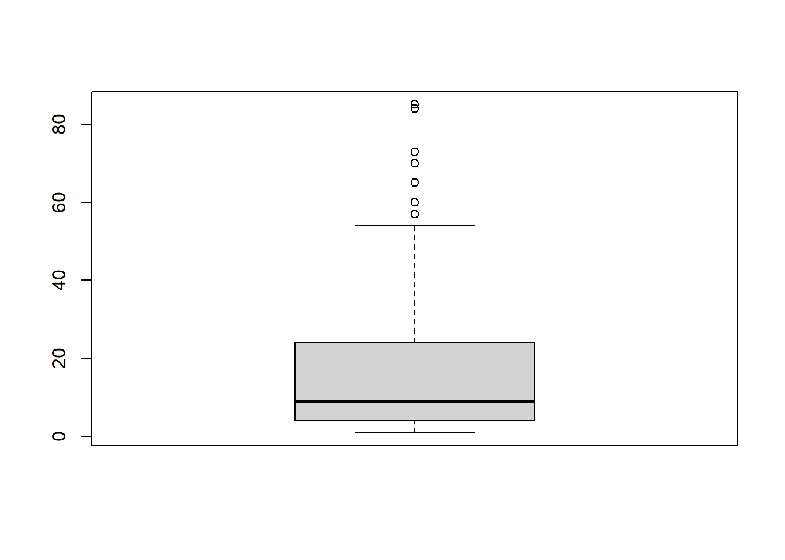
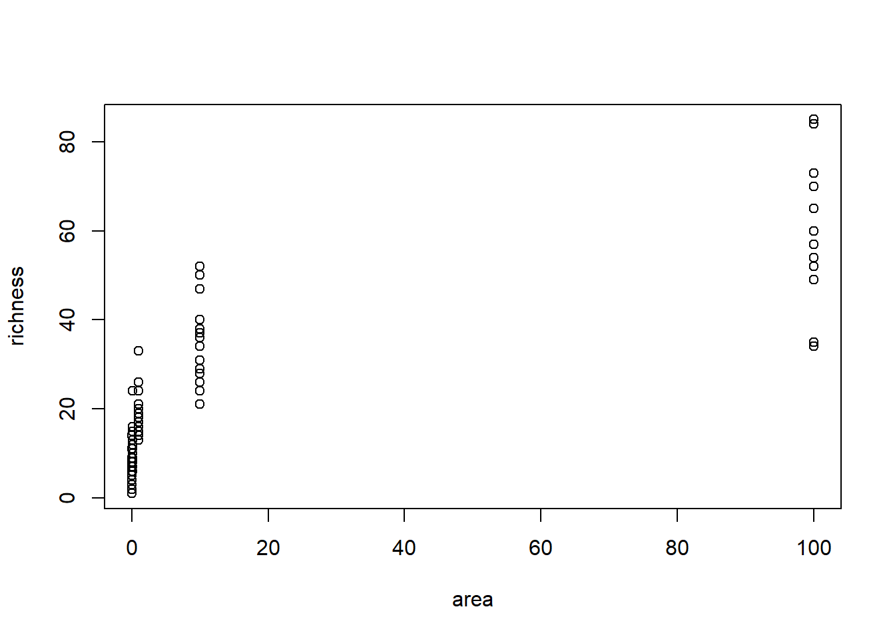
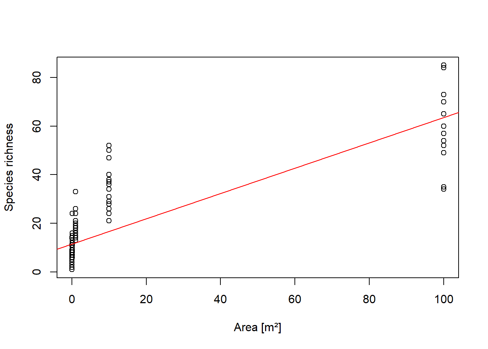
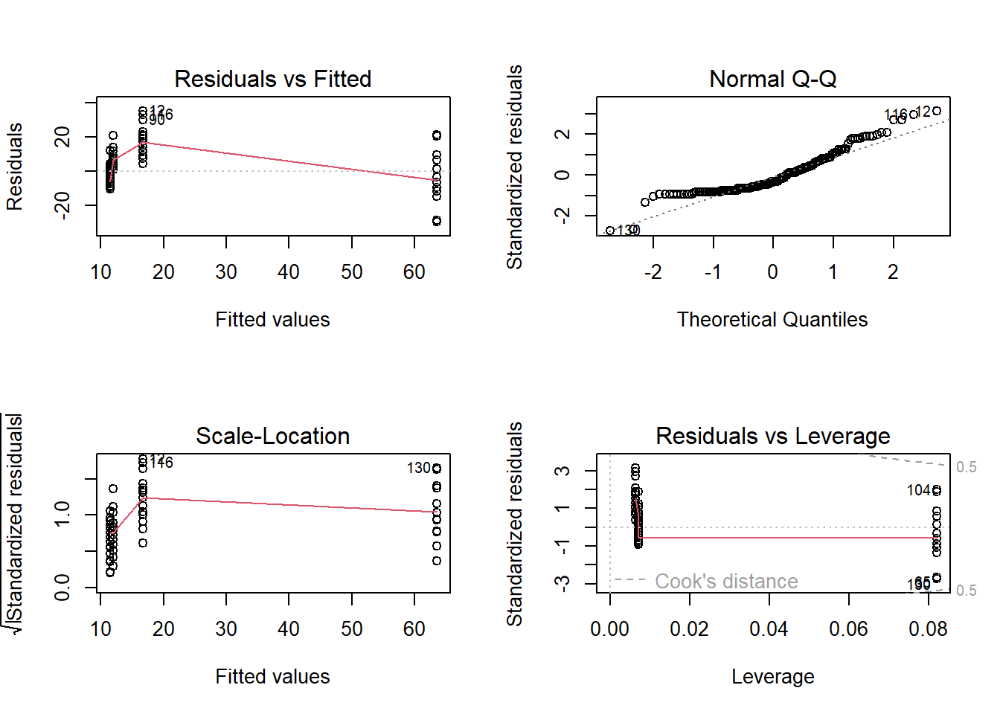
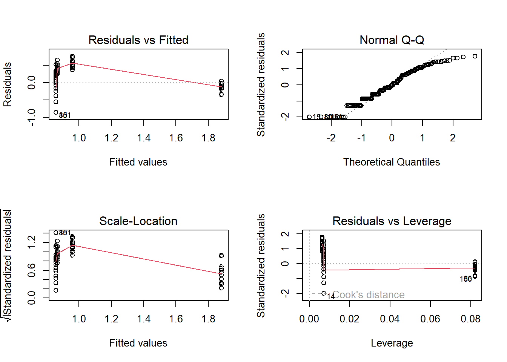
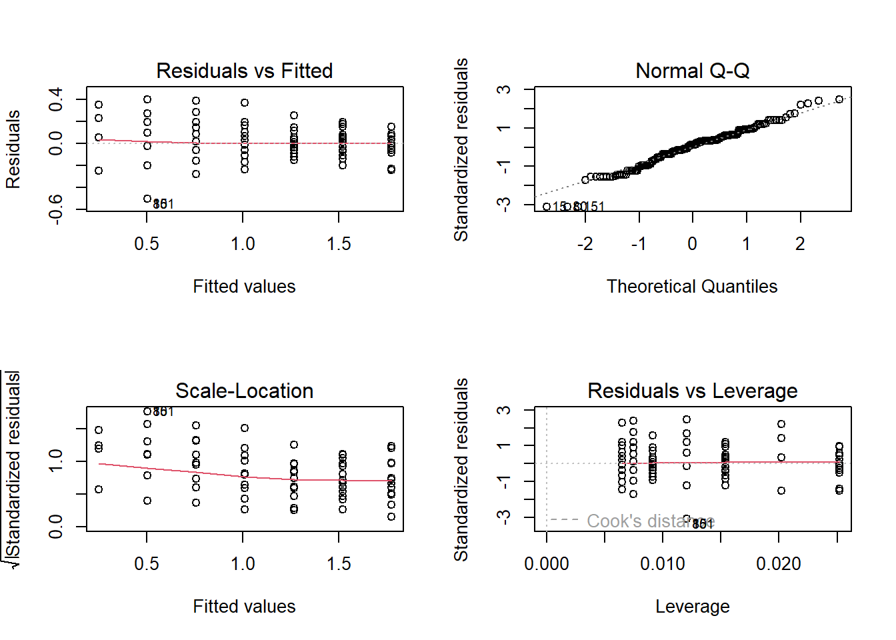
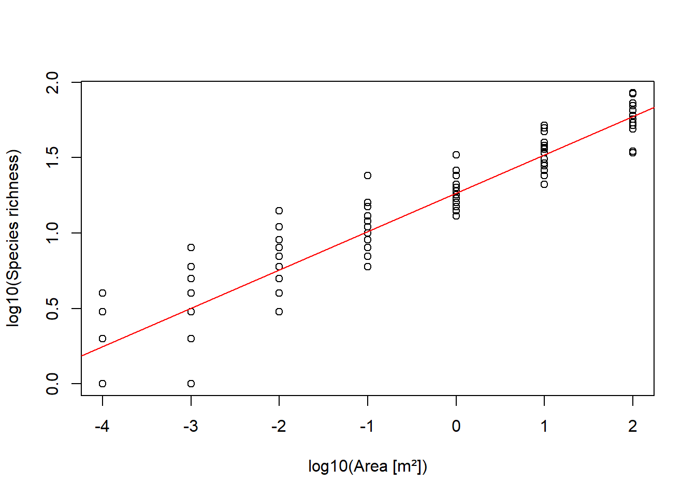
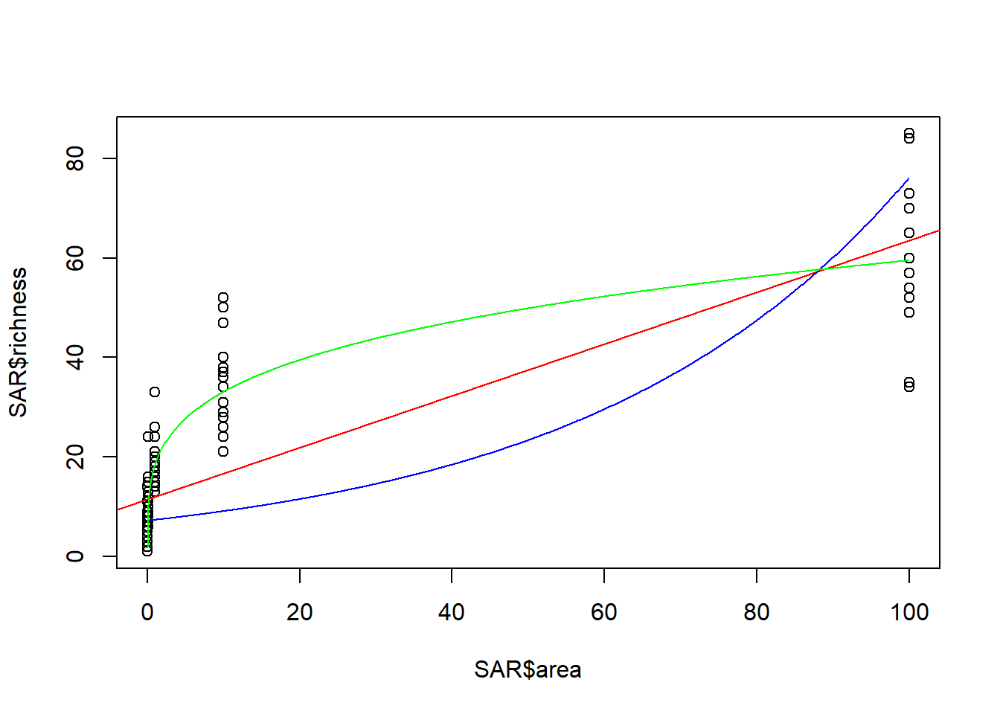

SAR <- read.delim("datasets/statistik/SAR.csv", sep = ";") # Daten einlesen
head(SAR) # Daten anschauen
## area richness
## 1 1e-04 2
## 2 1e-03 4
## 3 1e-02 4
## 4 1e-01 10
## 5 1e+00 26
## 6 1e+01 37
str(SAR) # Datenformat überprüfen
## 'data.frame': 156 obs. of 2 variables:
## $ area : num 1e-04 1e-03 1e-02 1e-01 1e+00 1e+01 1e-04 1e-03 1e-02 1e-01 ...
## $ richness: int 2 4 4 10 26 37 2 5 11 15 ...Stat2: Lösung 2.1
- Download dieses Lösungsscript via “</>Code” (oben rechts)
- Lösungstext als Download
Daten einlesen und exlporieren
summary(SAR) # Überblick verschaffen
## area richness
## Min. : 0.0001 Min. : 1.00
## 1st Qu.: 0.0010 1st Qu.: 4.00
## Median : 0.1000 Median : 9.00
## Mean : 9.4017 Mean :16.37
## 3rd Qu.: 1.0000 3rd Qu.:24.00
## Max. :100.0000 Max. :85.00
boxplot(SAR$area) # Boxplot der Flächengrösse
-> Erklärende Variable extrem rechtsschief.
boxplot(SAR$richness) # Boxplot der Artenzahl
-> Auch abhängige Variable extrem rechtsschief.
plot(richness ~ area, data = SAR) # Daten plotten
-> Zusammenhang sieht nicht linear aus.
Fazit Datenexploration: Sowohl die abhängige als auch die unabhängige Variable sind extrem rechtsschief verteilt und ihr Zusammenhang sieht nicht linear aus. Die Voraussetzungen für ein lineares Modell sehen also schlecht aus. Um diese Vermutung zu überprüfen, wird im Folgenden ein Lineares Modell mit anschliessender Modelldiagnostik gerechnet.
Einfaches lineares Modell mit Modelldiagnostik
lm.1 <- lm(richness ~ area, data = SAR) # lm erstellen
summary(lm.1) # lm anschauen
##
## Call:
## lm(formula = richness ~ area, data = SAR)
##
## Residuals:
## Min 1Q Median 3Q Max
## -29.567 -8.474 -3.503 6.112 35.317
##
## Coefficients:
## Estimate Std. Error t value Pr(>|t|)
## (Intercept) 11.4742 0.9582 11.97 <2e-16 ***
## area 0.5209 0.0342 15.23 <2e-16 ***
## ---
## Signif. codes: 0 '***' 0.001 '**' 0.01 '*' 0.05 '.' 0.1 ' ' 1
##
## Residual standard error: 11.27 on 154 degrees of freedom
## Multiple R-squared: 0.601, Adjusted R-squared: 0.5984
## F-statistic: 231.9 on 1 and 154 DF, p-value: < 2.2e-16-> Zwar hochsignifikant, aber stimmen die Voraussetzungen?
# Modell und Daten plotten
plot(SAR$area, SAR$richness, xlab = "Area [m²]", ylab = "Species richness") # Daten plotten
abline(lm.1, col = "red") # Modell plotten
-> Eine Gerade scheint ein schlechtes Modell zu sein für die Daten.
# Modelldiagnostik
par(mfrow = c(2, 2)) # 4-Plot-panel
plot(lm.1)
-> Auch Modelldiagnostikplots sehen schlecht aus.
Fazit lm: Wie erwartet sind die Modellvoraussetzungen nicht gut erfüllt: Das geplottete Modell verläuft teils auffällig “neben den Daten”, im Residuals vs. Fittet Plot zeigen die Residuen Trichter- und Bananenform und der Q-Q-Plot zeigt starke Abweichung der Residuen von Normalverteilung. Da drängt sich Datentransformation auf. Als nächstes wird darum Log10-Transformation ausprobiert.
Lösung A: log-Transformation der abhängigen Variablen
# Daten vor und nach log10-Transformation vergleichen
par(mfrow = c(2, 2))
boxplot(SAR$richness)
boxplot(log10(SAR$richness))
hist(SAR$richness)
hist(log10(SAR$richness))-> Tansformation zeigt den gewünschten Effekt.
# lm rechnen mit log10 transformierter abhängigen Variable
SAR$log_richness <- log10(SAR$richness)
lm.2 <- lm(log_richness ~ area, data = SAR)
summary(lm.2)
##
## Call:
## lm(formula = log_richness ~ area, data = SAR)
##
## Residuals:
## Min 1Q Median 3Q Max
## -0.85613 -0.34114 -0.01204 0.36365 0.75729
##
## Coefficients:
## Estimate Std. Error t value Pr(>|t|)
## (Intercept) 0.856116 0.036657 23.36 < 2e-16 ***
## area 0.010259 0.001309 7.84 6.94e-13 ***
## ---
## Signif. codes: 0 '***' 0.001 '**' 0.01 '*' 0.05 '.' 0.1 ' ' 1
##
## Residual standard error: 0.4313 on 154 degrees of freedom
## Multiple R-squared: 0.2853, Adjusted R-squared: 0.2806
## F-statistic: 61.47 on 1 and 154 DF, p-value: 6.939e-13-> Zwar hochsignifikant, aber stimmen die Voraussetzungen??
# Modelldiagnostik
par(mfrow = c(2, 2))
plot(lm.2)
-> Modelldiagnostikplots sehen noch schlechter aus als mit untransformierten Daten!
Fazit Lösung A: log-Transformation der abhängigen Variablen hat das Modell nicht verbessert. Im Gegebteil… Als nächstes wird darum eine zusätzlichge Log10-Transformation der Abhängigen Variablen ausprobiert.
Lösung B: log-Transformation beider Variablen
# Daten vor und nach log10-Transformation vergleichen
par(mfrow = c(2, 2))
boxplot(SAR$area)
boxplot(log10(SAR$area))
hist(SAR$area)
hist(log10(SAR$area))-> Tansformation zeigt den gewünschten Effekt.
# lm rechnen mit log10-Transformation beider VAriablen
SAR$log_area <- log10(SAR$area)
lm.3 <- lm(log_richness ~ log_area, data = SAR)
summary(lm.3)
##
## Call:
## lm(formula = log_richness ~ log_area, data = SAR)
##
## Residuals:
## Min 1Q Median 3Q Max
## -0.50241 -0.09353 0.02130 0.09965 0.40068
##
## Coefficients:
## Estimate Std. Error t value Pr(>|t|)
## (Intercept) 1.265730 0.015607 81.10 <2e-16 ***
## log_area 0.254440 0.006926 36.73 <2e-16 ***
## ---
## Signif. codes: 0 '***' 0.001 '**' 0.01 '*' 0.05 '.' 0.1 ' ' 1
##
## Residual standard error: 0.1633 on 154 degrees of freedom
## Multiple R-squared: 0.8976, Adjusted R-squared: 0.8969
## F-statistic: 1349 on 1 and 154 DF, p-value: < 2.2e-16-> Zwar hochsignifikant, aber stimmen die Voraussetzungen??
# Modelldiagnostik
par(mfrow = c(2, 2))
plot(lm.3)
-> Das sieht jetzt vergleichsweise sehr gut aus! (Bis auf ein paar Aussreisser)
# Modell und Daten plotten
plot(SAR$log_area, SAR$log_richness, xlab = "log10(Area [m²])", ylab = "log10(Species richness)") # Daten plotten
abline(lm.3, col = "red") # Modell plotten
-> Das Modell bildet die Daten gut ab.
Fazit Lösung B: Ein lineares Modell mit log-Transformation der unabhängigen und der abhängigen Variablen scheint die Daten am besten abzubilden. Abschliessend sollen nun die drei Modelle in einem Plot dargestellt werden.
Darstellung der drei Modelle
# Input-Vektor mit x-Werten für die Modelle erstellen, der die Bandbreite der
# Daten abdeckt
xv <- seq(min(SAR$area), max(SAR$area), 0.1)
plot(SAR$area, SAR$richness) # Daten plotten
abline(lm.1, col = "red") # Modell 1 (untransformiert) zu Plot hinzufügen
# Modell 2 (Anhängige Variable log10-transformiert) Modellvoraussagen berechnen
logyvlm2 <- predict(lm.2, list(area = xv))
# Modellvoraussagen rücktransformieren
yvlm2 <- 10^logyvlm2 # 10^ ist Umkekrfunktion von Log10
# Zu Plot hinzufügen
lines(xv, yvlm2, col = "blue") # Modell 2 auf untransformierte Fläche plotten
# Modell 2 (beide Variablen log10-transformiert) Modellvoraussagen berechnen
log10xv <- log10(xv) # Tansformierter Input-Vektor erstellen
logyvlm3 <- predict(lm.3, list(log_area = log10xv))
# Modellvoraussagen rücktransformieren
yvlm3 <- 10^logyvlm3 # 10^ ist Umkekrfunktion von Log10
lines(xv, yvlm3, col = "green") # Modell 2 auf untransformierte Fläche plotten
--> Auch hier lässt sich bestätigen dass Modell lm2 (blau) die Daten am schlechtesten und Modell lm3 (grün) die Daten am besten abbildet.